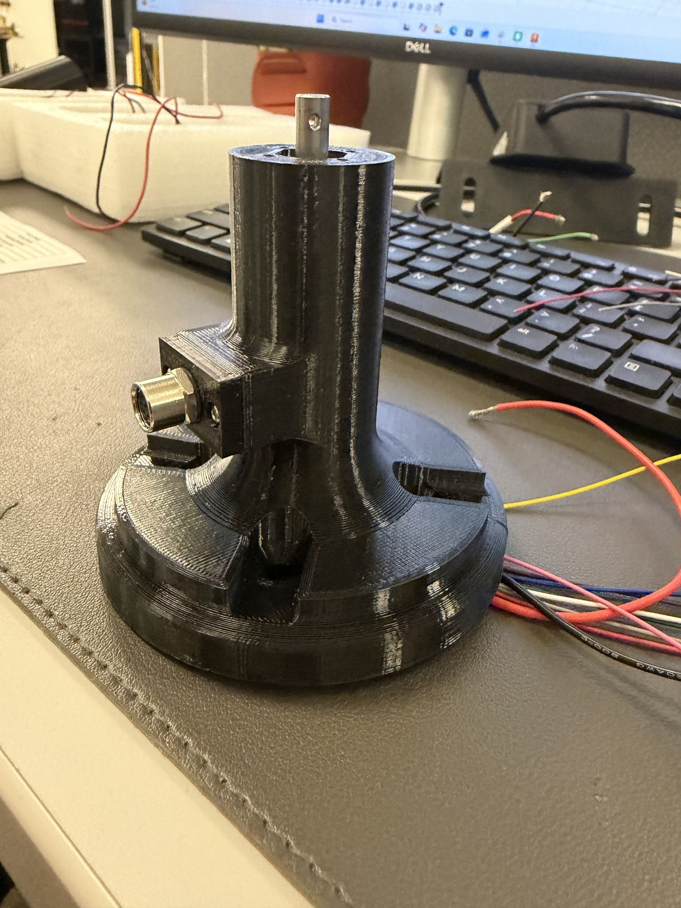
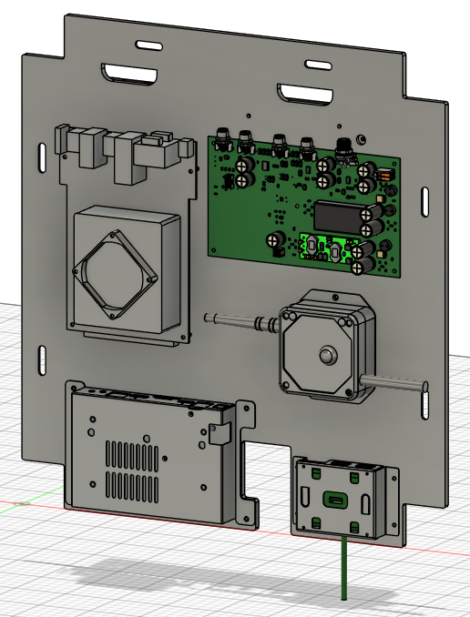
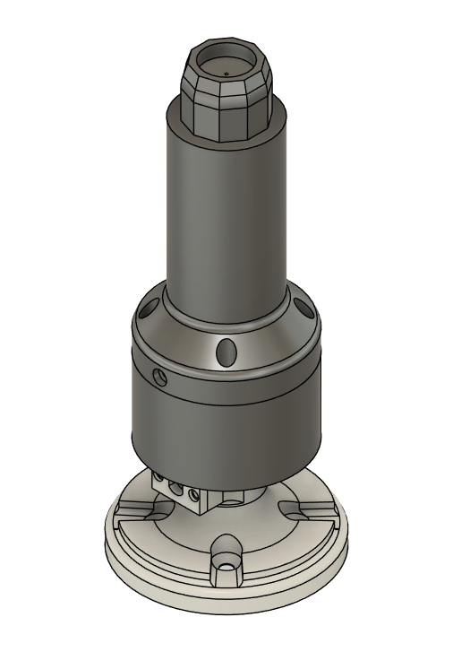
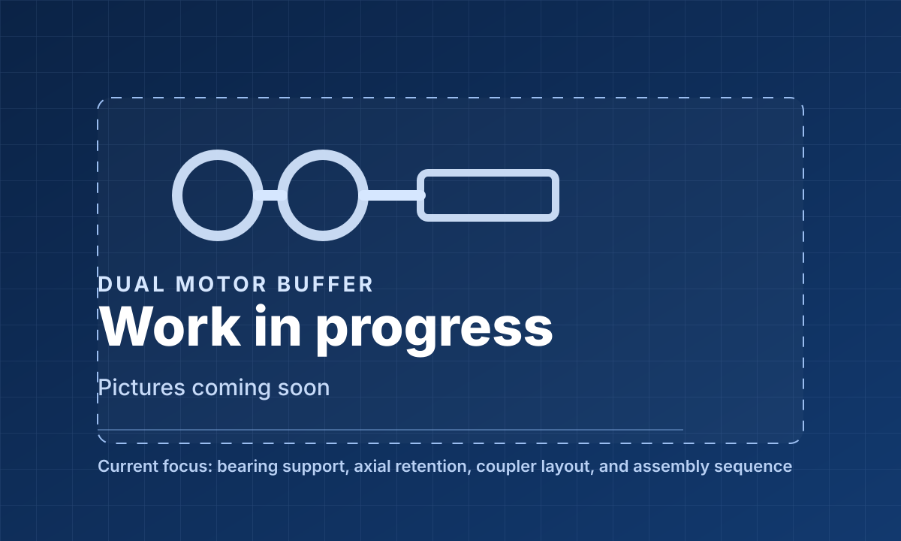
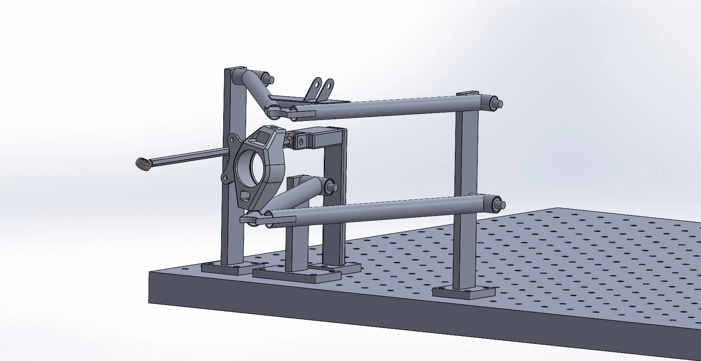
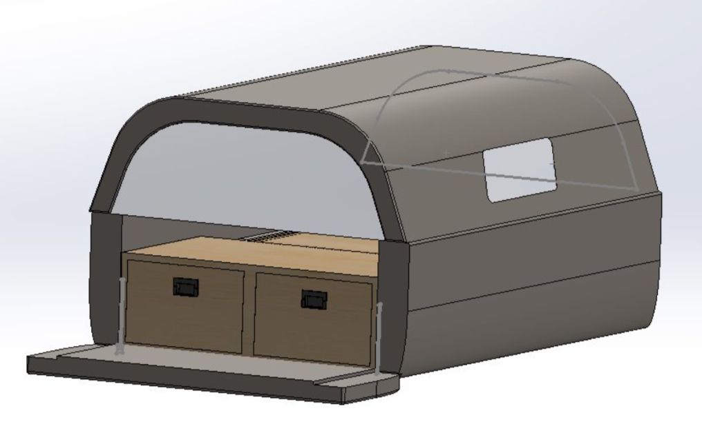
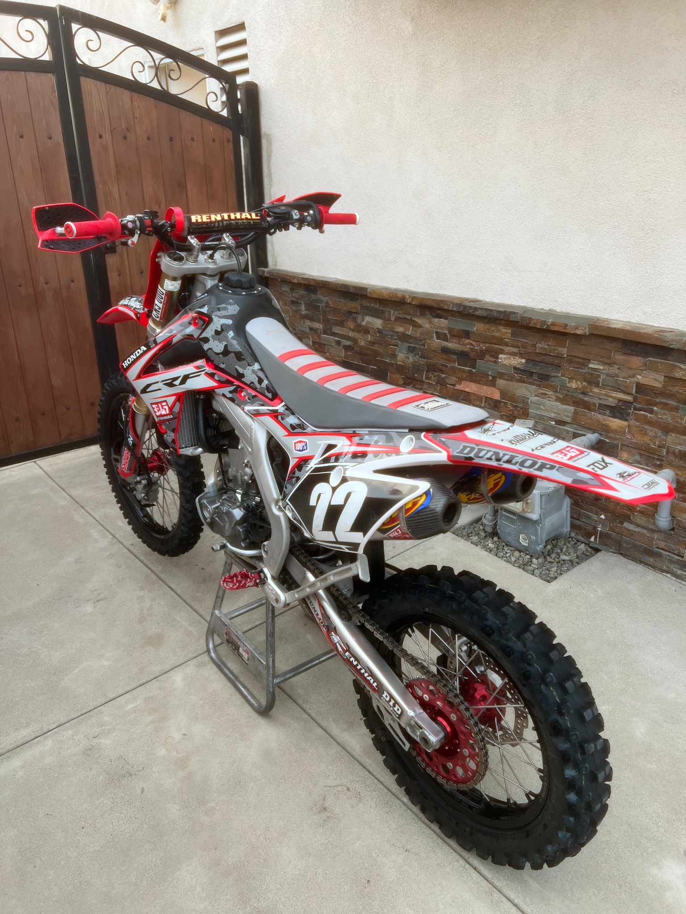
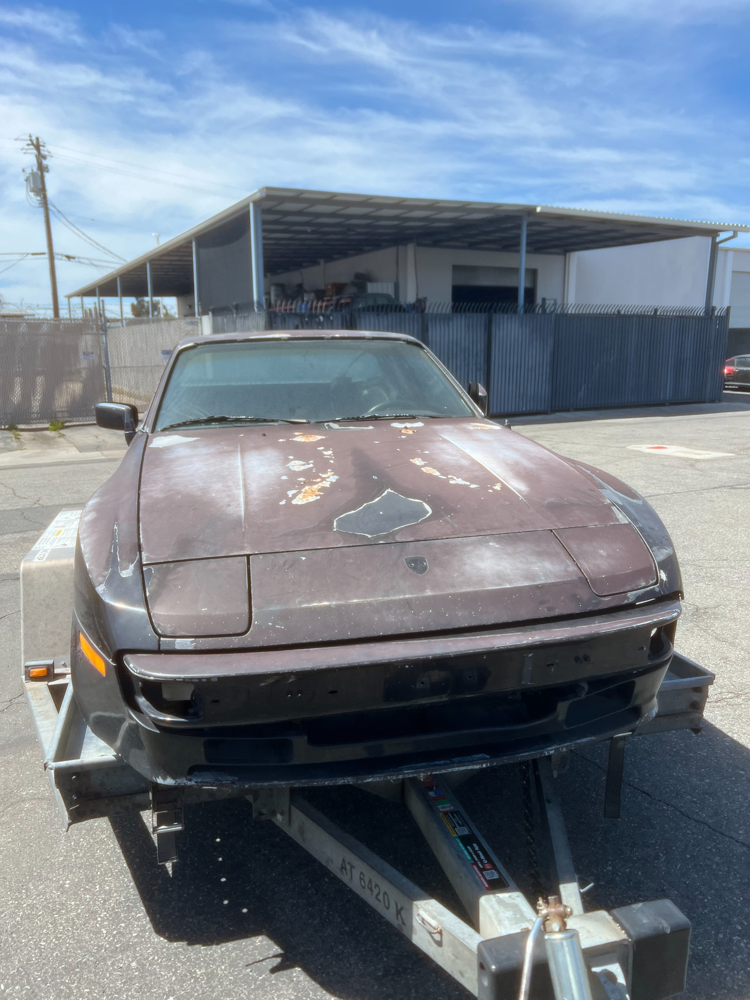

/ 01Robotics2026
UR10e Motor Mount with M8 Connector
Fusion 360 design, 3D-printed prototype, and M8 connector integration at the UR10e wrist.
Explore projectI’m a mechanical engineering student at California State University, Fullerton, focused on mechanical design, rapid prototyping, and turning CAD concepts into functional hardware. I’m currently interning in robotics at Kazvu Labs, where I design and prototype mechanical components. Outside of engineering, I enjoy riding and working on dirt bikes.
I enjoy solving the practical problems that turn a design into a working part: fit, motion, load paths, manufacturing constraints, and the details you only discover after making a prototype.
Hands-on work across robotics, manufacturing, kinematics, prototyping, and thermal design. Select a project to see my approach and the current results.

/ 01Fusion 360 design, 3D-printed prototype, and M8 connector integration at the UR10e wrist.
Explore project
/ 02ABS fit check and CNC drawings for a steel electronics mounting and counterweight plate.
Explore project
/ 03Designed a bearing-supported shaft assembly to carry radial loads while keeping torque transmission compact and serviceable.
Explore project
/ 04Developing a bearing-supported buffer design to manage motor-shaft loads and axial retention.
Explore project
/ 05Designed and printed suspension fixtures to build a PVC mockup and inspect linkage motion before manufacturing.
Explore project
/ 06CAD assembly and detailed drawings for a compact Tacoma camper storage system.
Explore project / 07
/ 07Led a six-person build, compared thermal predictions, and reached 165°C during outdoor testing.
Explore project
/ 08Hands-on engine, valve-train, carburetor, and clutch repairs across motocross bikes.
Explore project
/ 09Diagnosed a non-running 944 and tracked restoration costs before concluding the project.
Explore projectPortfolio project images include original CAD, drawings, and hands-on photographs. Internship work should be reviewed for sharing approval before the site is published.
Learning engineering through hands-on design, teamwork, and the discipline of bringing real parts together.
Designing and prototyping components for a mobile robotic cleaning platform with a UR10e arm. Work includes tool mechanisms, mounting hardware, mass-distribution studies, engineering drawings, and mechanical packaging.
Developed communication, troubleshooting, and team coordination skills in a high-service environment. Experience includes resolving guest issues and supporting complex requests across departments.
* July 2022 – June 2023; March 2024 – presentI'm most interested in work where design choices can be tested, questioned, and improved in the real world.
Define the motion, packaging, loading, and service requirements before choosing a geometry.
Use CAD and engineering calculations to explore fit, function, and manufacturability.
Prototype parts and assemblies with FDM printing or prepare drawings for manufacturing.
Use hands-on results and feedback to improve geometry, assembly, and reliability.
Fusion 360
SolidWorks
AutoCAD
MATLAB
Engineering drawings
CNC-ready part design
FDM 3D printing
Mechanical assembly
ABS / PETG / TPU
Mechanism testing
Arduino IDE
Design for manufacturing
Mechanical Engineering at California State University, Fullerton. My résumé summarizes hands-on robotics design at Kazvu Labs, CAD and manufacturing experience, and academic engineering projects.
I'm always interested in learning from engineers, exploring design challenges, and connecting about engineering opportunities.